A bone2での設定方法 まずはA Bone2を起動します。 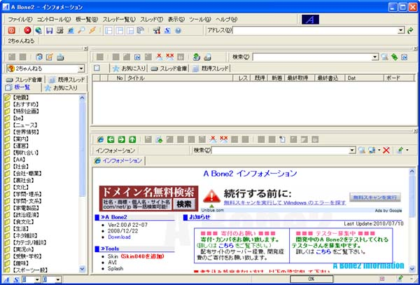 ２ちゃんねると表示されたリストボックスをクリックします。 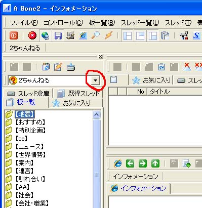 掲示板が選択できますので、「その他ＢＢＳ」を選択します。 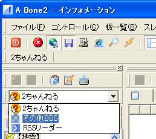 「その他ＢＢＳ」を選択したら、板一覧の空白部分で右クリックします。出てきたメニューから「板の追加」を選択します。 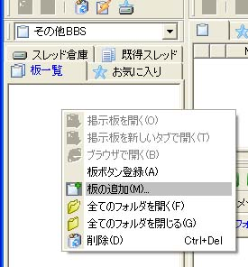 「外部ＢＢＳの登録/編集」ウィザードが出てきますので「次へ」をクリックして下さい。 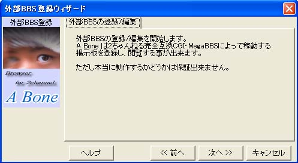 「ＢＢＳタイプの指定」では「２ちゃんねる互換」を選択して「次へ」をクリックします。 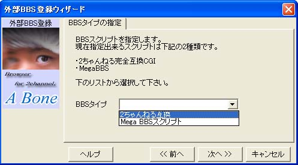 最初に登録する時は「カテゴリ名」を入力します。そして掲示板名を入力して「次へ」をクリックします。 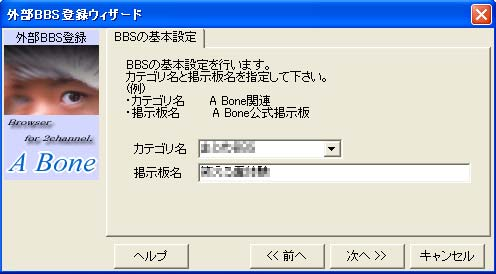
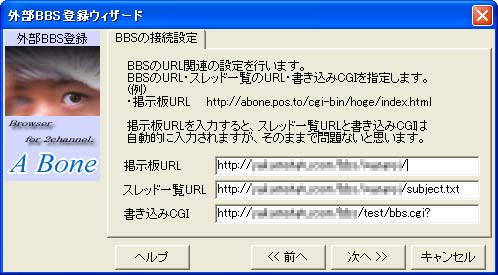 「ＢＢＳの詳細設定」は変更の必要が有りませんので「次へ」をクリックします。 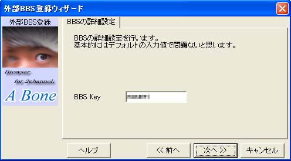 「ＢＢＳ登録の完了」画面が出ますので「ＯＫ」をクリックします。 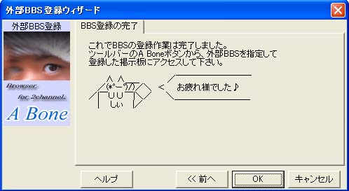 「その他ＢＢＳ」に先程設定した内容が追加されます。他の板を追加する場合も同様の作業を繰り返します。 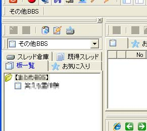 レスの書き込みや新規のスレ立ては普通にできます。 |